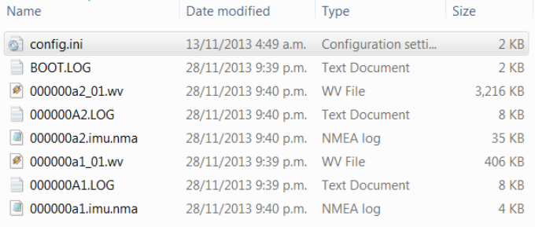
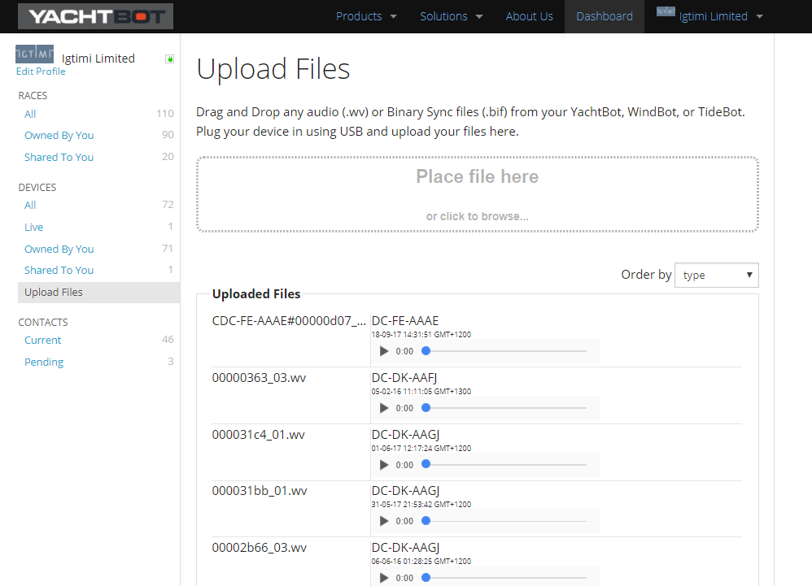

YachtBot Bio - Using Audio devices
YachtBot Bio provides for recording of two channels of audio. After recording to YachtBot's memory, you can upload the data to the YachtBot website. The audio data is available for playback with perfect synchronisation to GPS, heart rate, and (optionally) IMU data. This article explains how to configure your YachtBot Bio and facilitate the uploading of audio data files.
When using two headsets it is also possible to use the headsets as an intercom, check the configuration details at the end of this article.
Audio hardware
YachtBot Bio works with most consumer Bluetooth headset/microphones that support Bluetooth Classic (Version 4.x) HFP profile. Bluetooth Low Energy (Version 5.x) headsets are not supported. The quality of headsets varies dramatically and some trial and error may be required to find the best match for your specific application. We recommend starting with for example the Jabra EasyGo as an economical option with good performance.
Setup
Clearing Pairings
To clear pairings of all devices, push the power button on YachtBot seven times. After a couple of seconds YachtBot Bio emits a long beep to indicate that all existing pairings have been cleared. YachtBot Bio now does not record any audio or heart rate until a new headset has been paired. Note that button pushes should be made at a rate of 1-2 presses per second.
Pairing
To pair a YachtBot Bio with a headset requires asking both YachtBot Bio and the headset to enter "pairing mode" using two simple steps;
- YachtBot Bio: With YachtBot Bio running, push the power button 5 times. The Audio indicator blinks intermittently.
- Headset (model dependent): usually power up and press and hold the button.
If you are pairing a brand-new headset, just turn it on immediately after YachtBot Bio is in pairing mode. Most new headsets will pair by default out of the box.
If pairing is successful, YachtBot Bio emits a long beep after about 10-15 seconds. If you don't hear the beep, then pairing was not successful, try again. YachtBot Bio searches for headsets during a 10 second period after step 1), so it is important that both steps are done in reasonably quick succession.
If wanting to pair to a second device, repeat the process again. YachtBot Bio will remember up to eight pairings. The first one or two devices to connect will be recorded.
Recording Audio
Once pairing was successful, all that is necessary to record audio is turn on the Bluetooth headset while YachtBot Bio is running. The audio indicator will blink slowly until the first audio device connects, and then it will come on solid.
If at any point audio is lost (out of range, battery flat on headset) then the audio indicator will blink quickly until the connection is re-established.
How do you make sure you stay connected?
- Most Bluetooth headsets will only try reconnect for a couple of minutes after moving out of range. To reconnect manually it is usually necessary to manually reconnect by (typically) pressing the button on the headset.
- Most Bluetooth headsets will indicate that they have a connection with some kind of visual indicator (a blue blinking light), and will announce this through the speaker as a beep or voice message such as "connected".
Upload and playback
Audio files will be recorded as a file with a .wv extension. To upload these files to the YachtBot website, plug YachtBot Bio into a USB port and wait ~10 seconds. An external drive will mount with contents typically as shown here:

File names
The file prefix "000000a2" is the Stream ID, which is a unique number that increases each time YachtBot Bio is powered up. The suffix _01 indicates a particular recording during that power cycle of YachtBot Bio. If a headset goes out of range and reconnects then this number will increase. In this example, we have two audio files - one in each per power cycle. Copy the audio files to your hard drive for temporary storage.
Uploading
To upload the files, log in to the YachtBot website, then go to Upload Files in the Devices section.

After uploading the files, please wait for the files to be processed and made available. This could take some time if the files are large.
At any stage you can check on progress by clicking on one of the status categories (see below) and refreshing your browser.
Uploading
Audio is still being uploaded from the browser to the server.
Pending
Audio files here were recorded without GPS time synchronisation, or are otherwise invalid and cannot be used
Processing
Files are being processed… please wait.
Uploaded
Reports on how many files have been uploaded for each device.
IMAGE ABOVE SHOWS ONLY UPLOADED FILES.
In race editor and viewer
Once you make a race with a device that has audio uploaded to it, you see a symbol next to the device in the race editor. When viewing the session you see a coloured bar for each audio device just above the time slider at the bottom. When the viewer is playing anywhere where there is a bar, audio starts automatically and is synchronised as you navigate. No need to wait for the audio to download, it streams automatically as it plays. Note that audio will mute unless it’s playing at 1x speed.
Configuration
Is handled in the config.ini file on YachtBot Bio. This is a typical configuration block to enable dual channel audio in YachtBot Bio;
\## BT Setup
##
#
bt used\_channels 2
bt loopback on link mono
bt on
bt start
With this configuration;
- YachtBot Bio supports one or two channels of audio
- Audio is looped back (ie, you will hear yourself)
- If two devices are connected then they will be connected like an intercom (i.e. you can hear the person with the other headset)
To force single audio channel use;
bt used\_channels 1
To disable all audio loopback or intercom;
bt loopback off
To enable intercom mode but disable loop-back when only one device is connected;
bt loopback on link
Happy audio recording!